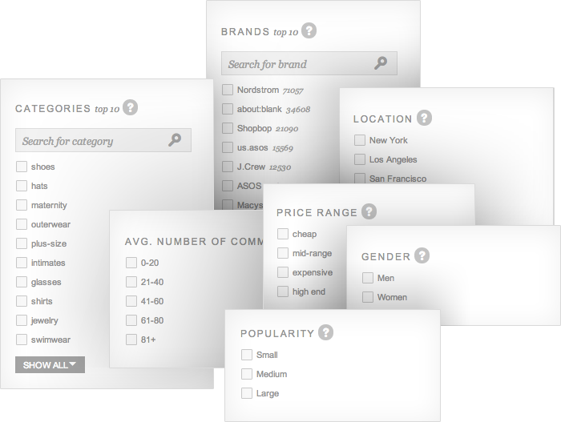
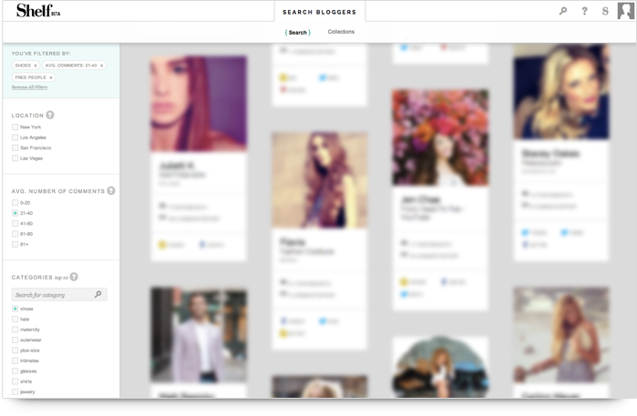
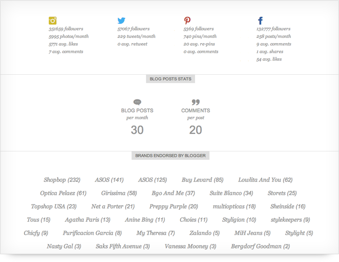
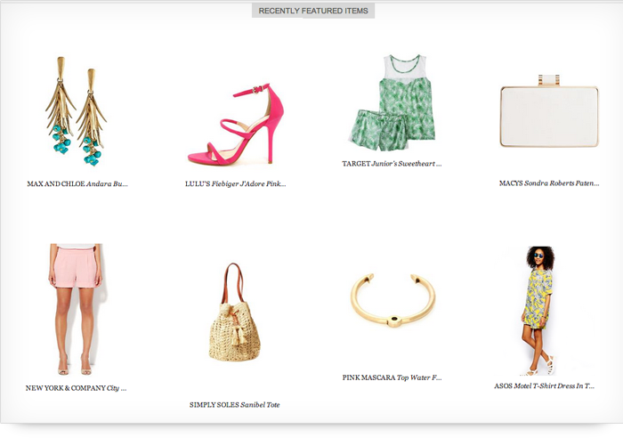
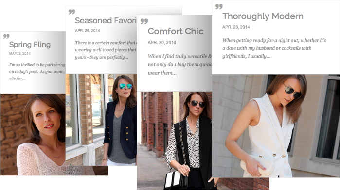
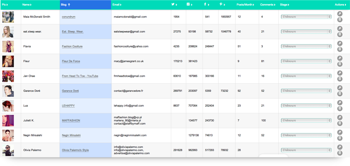

{% load compressed %}
The Shelf: Fashion Blog Network Where Brands Meet Bloggers
{% if flavour == "mobile" %}
{% endif %}
{% compressed_js 'core_head' %}
{% include 'popups/generic_message_lb.html' with popup_type="generic-message-popup" %}
{% include 'popups/contact_us_lb.html' with popup_type="contact-us-popup" %}
{% include 'popups/login_lb.html' with popup_type="login-popup" %} {% include 'popups/signup_lb.html' with popup_type="signup-popup" %}
{% include 'popups/forgot_password_lb.html' with popup_type="forgot-password-popup" %} {% include 'django_facebook/_facebook_js.html' %}
{% include 'widgets/landing_nav_header.html' %}
The Shelf : a Network for Fashion Bloggers
We help you discover, research, and keep track of the fashion bloggers you want to collaborate with.
Our filters will help you find the perfect set of bloggers for your brand and image. You can search by similar brands, location, popularity, engagement, etc. And more are getting added soon!


Quickly Scan Matching Bloggers
The search results are laid out in an easy-to-scan feed. Each result contains a profile picture, name/blog info, as well as social media counts.
View Detailed Information
We give an overview of all social media metrics : followers, engagement, and interactions. Beneath that, we show a list of all brands the blogger has blogged about, plus the number of items featured from those brands.


Quickly Check Products
We surface each of the items that a blogger has posted about recently so that you can get a feel for her style. The items listed will be relevant to the search queries performed.
View All Blog Posts
You can quickly check out all of the recent blog posts. We collect more than 100 for each blogger and surface a summary and photo. If you'd like to view the entire post, click on the post to take you to the blogger's site.


Blogger Lists
To keep track of bloggers you'd like to reach out to, you can bookmark them into collections. These collections show up in the form of a spreadsheet, so that you can quickly view all relevant stats as well as keep track of outreach stages for each blogger.